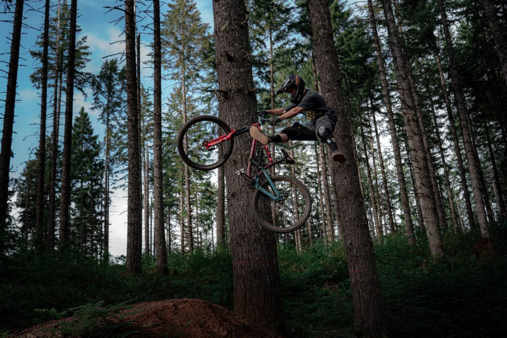
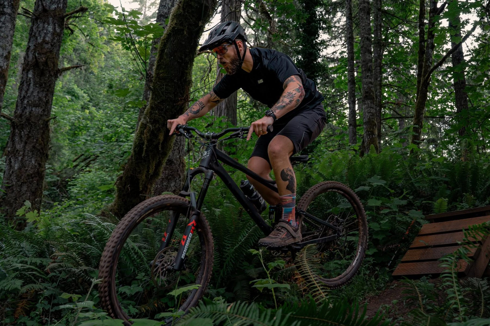
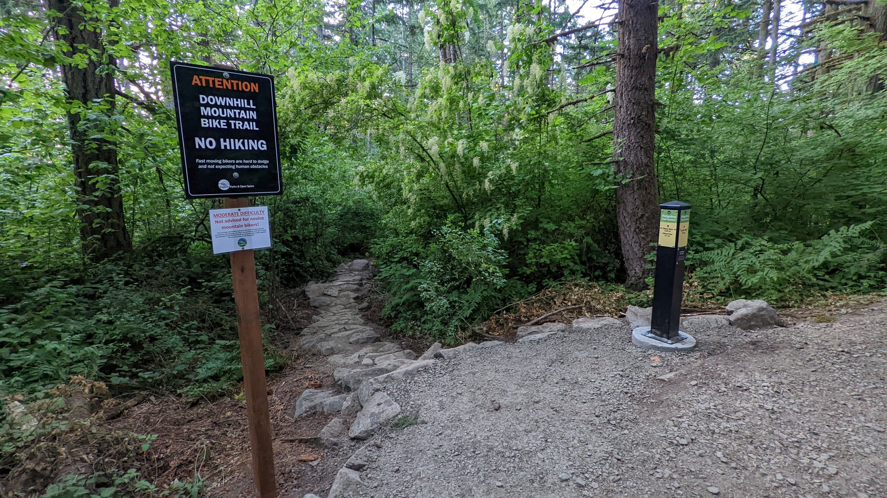
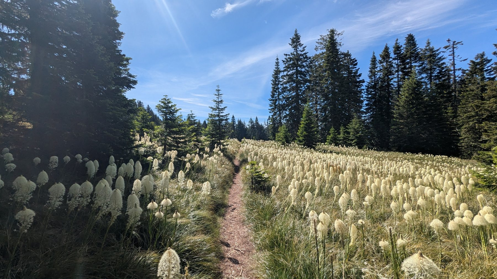

Find your people.
Happy Rides, Taco Tuesdays, trail openings, and events help riders plug into the local mountain bike community.
Where to start
DoD exists to preserve and enhance mountain bike access through trail stewardship, advocacy, outreach, social rides, and responsible trail use.
Members and donors support real trail work, local partnerships, and close-to-home riding opportunities for all ages and abilities.
Wherever bikes are allowed! Locally, we have a great network of urban trails at Thurston Hills Natural Area and a growing network in the Eugene Ridgeline System. We're also well known for our work at Carpenter Bypass (Whypass), which was formally adopted by the BLM in 2013, and for our long history supporting mountain bike trails in Oakridge, which offers a wide variety of singletrack.
Thank you! Many trails are sensitive to wet-weather riding. Carpenter Bypass is designed for winter riding - bring fenders and maybe a towel to sit on afterward. Alsea Falls is often good a couple of days after rain. North Shore, near Lowell, is a great cross-country option. The Ridgeline trail system has shared-use gravel trails, and Pipedream remains open in winter.
Come to one of our Happy Rides, or the Taco Tuesday ride at Thurston Hills in summer and fall. You can also introduce yourself in the Eugene Mountain Bike Facebook Group to find riders with similar pace and preferences. Check our calendar or sign up for the newsletter for updates on group rides and trail work parties.
Because we love dirt - and spreading the good gospel of trail stewardship.
Your membership helps us build and maintain more local mountain bike trails. You also get discounts at local bike shops like Lifecycle and Bicycle Way of Life. Considering how much we all spend on gas and bikes, $30 to support local trails goes a long way.
Of course! We're a registered 501(c)(3) nonprofit, so your donation is tax-deductible.
Us too - but we don't set tax rates. We are advocating that the bike taxes collected on mountain bikes should go toward building bike trails instead of going to ODOT.
Yes! Every one of us started with zero experience. You'll learn quickly from more seasoned stewards.
Probably! First, contact the local land manager to ask about park adoption and whether other groups already maintain the area. Trail building takes longer than you'd expect, but we've recently helped build and adopt several local trails.
We love all our local shops.
Lifecycle carries Kona, Juliana, Norco, Pivot, Rocky Mountain, Santa Cruz, Transition, and Yeti. Bicycle Way of Life carries Trek and Scott. Hutch's carries Giant and Specialized. Show your DoD membership card for discounts on parts and accessories.
Suzanne Arlie Park is slated for development in 2025. Eugene Parks and Open Space won a $1.2 million grant, matched with $800,000 from bond funds. Contracting has closed, and the project is required to be completed by May 2026.
Have a bike? Have a helmet? Go have fun! Work on basic skills by messing around on curbs - just like being a kid again. If you're learning to jump, start small and progress slowly. Invest in knee and elbow pads because crashing is part of the sport. There are excellent skills clinics from Ninja MTB and Dennis Silvia-Young. Pump tracks in Creswell, Oakridge, and Horse Creek Lodge are great for learning cornering and pumping.
IMBA does great work nationally, but many of the benefits they used to offer local clubs - like handling nonprofit administration - have declined. For us, the membership fee no longer made sense for the limited local benefit.
Bring them to one of our kids' rides! If they're middle- or high-school-aged, check out the Eugene Composite NICA Team. They practice twice a week from summer through mid-fall and race in five events across Oregon.
Happy Rides, Taco Tuesdays, trail openings, and events help riders plug into the local mountain bike community.
Where to startNo experience required. Trail work parties teach new volunteers how to brush, rake, move gravel, build tread, and maintain access.
Volunteer interestMemberships, donations, sponsorships, and grants turn into tools, materials, contractor support, snacks, signage, and stewardship.
See the numbersFind local trail systems, current maps, stewardship notes, and the place to report volunteer hours after a work party.
Report TrailWerk
Year-round BLM trail system with cross-country, old-school downhill, and modern machine-built jump and flow trails.

Springfield's urban trail system with shared-use climbing routes, dedicated downhill trails, and seasonal condition needs.

Eugene's urban multi-use system, including Pipedream and future opportunities around Suzanne Arlie Park.

IMBA Gold-level destination riding, with a long DoD stewardship history and ongoing partnership with OTA.
DoD is a volunteer-powered nonprofit, so cash spending only tells part of the story. Even so, recent P&L data shows a high share of spending going to trail building and programs.
of every $1 spent in 2026 YTD went to trail building + programs
Data: DoD cash-basis P&L, Jan-Apr 2026. 2020-2025 broader program-service ratio: 83%. Figures are internal estimates unless audited financials are provided.

From Oakridge and Carpenter Bypass to Thurston Hills, Ridgeline conversations, and future Eugene/Springfield trail systems, DoD's role is to keep mountain biking visible, responsible, and organized.

TrailWerk is the public place for volunteers to record hours after a trail work day.
Open TrailWerkThe membership page is the current public entry point for individual and family memberships.
Membership portalSponsors, donors, partners, land managers, and local businesses all help make trail work possible.
Membership starts at $30/year